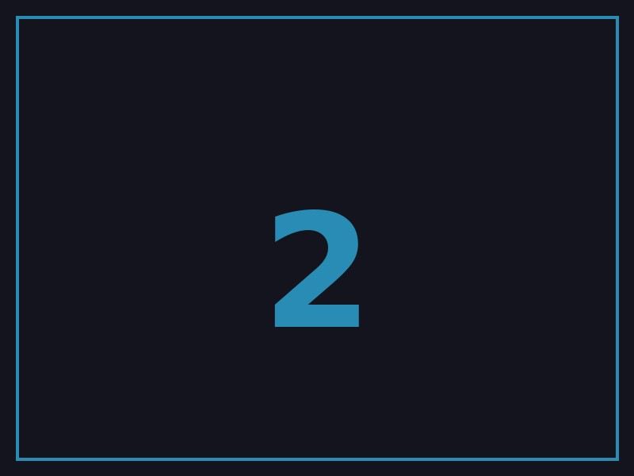

The gallery shortcode creates an image cycler with left/right
navigation. Images are driven by natural dimensions — no fixed
aspect ratio.
Syntax
{{< gallery [width] />}}
image-path-1.jpg
image-path-2.jpg
{{</ /gallery >}}
Parameters
width→ max width in px, centered (default: full width)
Navigation
- on-screen ← → arrows
- keyboard arrow keys while hovering
- counter shows
1/N
Full Width




1/5
Custom Width
1/5
Both galleries operate independently — keyboard input only affects the gallery currently under the mouse cursor.